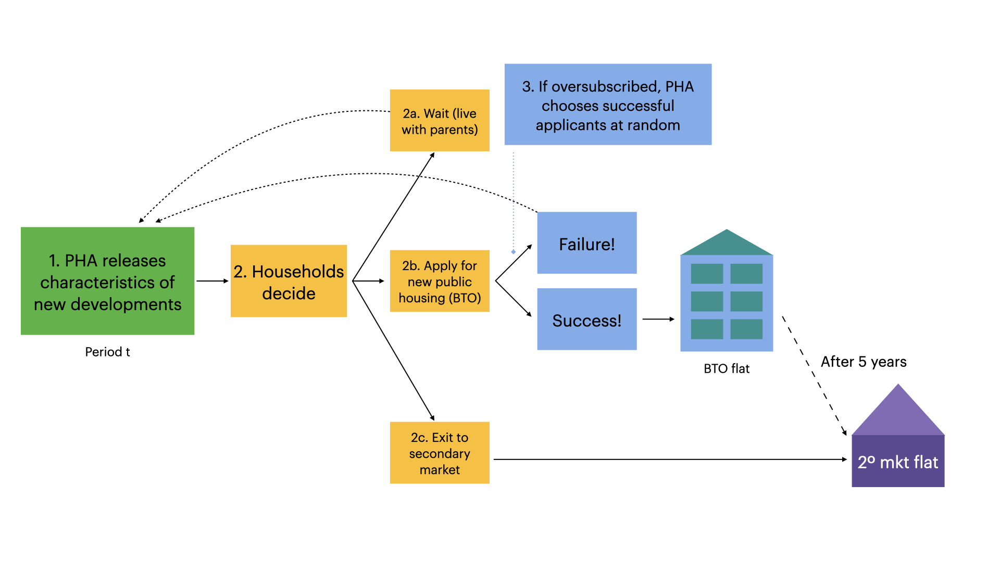

Public housing allocation
(Policy design vs. construction)
Kwok-Hao Lee
(with Andrew Ferdowsian and Luther Yap)
Created: 2022-05-27 Fri 18:03
1. Introduction
1.1. Motivation
We study the design of a large-scale public housing program
- Covering 80% of residents in a developed country
- Similar to those in major European and Asian cities
Because of limited land and funding, housing assistance is rationed.
- The government builds (public) housing
- sold below market prices
- possibly resold on a regulated aftermarket
- rationed by quarterly lottery over each applicant's top choice
- to achieve social objectives
1.2. Research questions
- What are the effects of changing allocation rules for public housing,
vis-à-vis building slightly more?
- "… we need to manage the building programme carefully, including allocating new flats in a fair, cost-effective and efficient way." (Mah 2011, 29)
- What are the impacts on wait times and prices on the aftermarket?
- "By 2014… first-time homeowners were counseled publicly to… wait for the new supply… Levies… deter[ed] property investments." (Chua 2017, 92–93)
1.3. Agenda
- Introduce the setting and provide descriptive analysis
- Build dynamic structural model of (new) public housing allocation
- Young households observe developments, then choose: apply to one, wait, or
buy off 2\(^{\circ} \) market
- Choice depends on preferences, lottery odds and 2\(^{\circ} \) market prices
- 2\(^{\circ} \) apartment owners observe prices, then decide whether to sell
- Young households observe developments, then choose: apply to one, wait, or
buy off 2\(^{\circ} \) market
- Estimate on novel data from the Singaporean mechanism
- Estimate dynamic demand (NFXP-GMM) and 2\(^{\circ} \) market supply (Euler CCP)
- Key challenge: endogenous lottery odds and 2\(^{\circ} \) market prices
- Evaluate how well the government can do…
- by changing the rules of the game?
- by building a little more?
1.4. Preview of results

1. What are the effects of changing allocation rules for public housing…
- Changing rules generates spillovers in other markets
- Key trade-off: \[ \text{Apartment vacancies} \leftrightarrow \text{Young household welfare} \leftrightarrow \text{Owner-occupier home equity} \]
- A strategyproof mechanism reduces vacancies (12% \( \to \) 7%) but
advantages existing homeowners
- Rich households wait 23% less; poor 8% less
- Demand drives up prices on the secondary market (>15%)
- Only justified by strong preference for efficiency over redistribution
2. … vis-à-vis building slightly more (10%)?
- Choosing to wait longer can be rational (but selfish!)
- Developments are differentiated by location
- Expanding supply raises vacancies (12% \( \to \) 16%)
- Agents apply for desirable developments, but welfare largely unchanged
- Rich wait 3% less (1.3 weeks); no change for poor
- Existing homeowners virtually unharmed
Contributions
- First to evaluate market design and subsidy changes against a supply increase, reminiscent of Bulow and Klemperer (1996)
- Captures dynamic tradeoffs between waiting and applying in public housing choice
- Combines endogenous "success probabilities" and equilibrium prices on the secondary market
2. Setting
2.1. Historical context
80% of Singaporean households live in government housing
- 2021: 1.1m apartments, est. value S$440b
Build-to-order (BTO) mechanism, new government apartments (2001-today)
- S$6.3b/year (US$4.7b/year)
- Administered by the Housing and Development Board (HDB, 1960-today)
- "Sells" 99-year leases to households assigned new apartments
- Intermediates resale on (after)market
Government objective: Provide "affordable, quality public housing option"
- Encourage homeownership
- "Affordable": \( \leq \) 4x applicant yearly income
- Minimize vacancies
- Ensure economic and racial integration, family formation…
… Not estimated in this paper (see Ferdowsian, Lee and Yap 2022)
Eligibility for the mechanism
Applicants apply for BTO as a family unit (typically a married couple)
- One must be a Singapore citizen; the other a citizen/PR
- Both aged \( \geq \) 21 years
- Do not own real estate in Singapore or overseas
- Income \( \leq \) S$144,000 a year
Priority: Focus on "first-timers."
- 95% of apartments in desirable neighborhoods reserved for them
Subsidies and apartment types
- Unit of analysis: Housing development, (location, size) pair
- Subsidies
- Explicit: "Discount" on apartment conditional on income
- Implicit: "Sticker price" < Price of comparable resale units
- Apartment types
- 3(4)-room: 2(3) bedrooms, 1 living room
- 5-room: 3 bedrooms, 1 living room, 1 dining room
Historical context (comparison)
| Characteristic/Settings | Singapore (+ Israel, Brazil, …) | United States (e.g. NYCHA) |
|---|---|---|
| Lease type | Owner-occupation | Rental |
| Lease tenure | \( \geq \) 99 years | 1-2 years |
| Lease transferable? | Yes, after min term (SGP, ISR: 5 yrs) | No |
| Applicant wealth | Low to moderate | Low |
| Transfer type | Income-specific subsidy + | Direct rent control/ |
| Discount from "resale price" | Voucher (for rent > 40% AGI) | |
| Allocation mechanism | Centralized assignment, lottery | Waitlist |
| Application cycles | Periodic (SGP: Quarterly) | Continuous (FIFO) |
| # Choices per app | 1 | > 1 |
2.2. The Singaporean housing market
Within a period…

- Cannot participate if I already have a house
Housing affordable for the poor?

2.3. Descriptive analysis
- Apartments relatively homogeneous within a development
- Households responsive to eligibility/subsidies, but not on marriage margin
- The vast majority of young couples live with their parents
- Sticker prices are set based on observable amenities
- To households, access to schools and public transit seem to matter
- But are not congested
- Government apartments enter the housing stock slowly
- Most applicants matched within 3 quarters
Location of BTO developments

Sticker prices are set based on observables
Young couples live with their parents
- 2015: Only 24k Singaporeans aged 21-35 "living alone or away from parents"
- In our setting: max 1k renting households, much lower than 15k waiting/unmatched per period
Congestion of amenities is unlikely
Most applicants are matched within 3 quarters
Written answer by the Ministry for National Development:
- "Between 2019 and 3Q2020, the mean number of attempts by [successful] first-timer families was 1.3, and the mode and median… were both 1." (July 27, 2021)
Government apartments enter the housing stock slowly
Applicants respond to changing eligibility and subsidies
- Income ceiling \( $120k \rightarrow $144k \)
- 4-room apartments in non-mature estates eligible for "full subsidies"
Are tomorrow's BTO quantities predictive of today's resale prices?
Fixed Effect Model =================================================================== Number of obs: 143 Degrees of freedom: 10 R2: 0.970 R2 Adjusted: 0.968 F-Stat: 22.2922 p-value: 0.000 R2 within: 0.572 Iterations: 1 =================================================================== p_mean | Estimate Std.Error t value Pr(>|t|) Lower 95% Upper 95% ------------------------------------------------------------------- Q_tot | 5.35086 4.09878 1.30548 0.194 -2.75637 13.4581 Q_tot_b1 | 12.1578 3.91939 3.10197 0.002 4.40542 19.9102 Q_tot_b2 | 13.8998 3.93991 3.52795 0.001 6.10679 21.6928 Q_tot_b3 | 15.1357 3.94968 3.83212 0.000 7.32336 22.948 Q_tot_f1 | 4.71945 3.49805 1.34917 0.180 -2.19956 11.6385 Q_tot_f2 | 3.33006 3.13656 1.06169 0.290 -2.87393 9.53404 Q_tot_f3 | 1.81114 2.81271 0.643912 0.521 -3.7523 7.37457 ===================================================================
Homeowners on the aftermarket may have limited foresight
Are tomorrow's BTO quantities predictive of today's resale quantities?
Fixed Effect Model ======================================================================= Number of obs: 143 Degrees of freedom: 10 R2: 0.343 R2 Adjusted: 0.299 F-Stat: 2.21645 p-value: 0.045 R2 within: 0.162 Iterations: 1 ======================================================================= q_resale | Estimate Std.Error t value Pr(>|t|) Lower 95% Upper 95% ----------------------------------------------------------------------- Q_tot | -0.125728 0.130241 -0.965355 0.336 -0.383339 0.131882 Q_tot_b1 | -0.0748124 0.130137 -0.574875 0.566 -0.332218 0.182593 Q_tot_b2 | 0.0632109 0.149432 0.423009 0.673 -0.232359 0.358781 Q_tot_b3 | 0.154947 0.13045 1.18778 0.237 -0.103079 0.412973 Q_tot_f1 | 0.341434 0.18544 1.84121 0.068 -0.0253593 0.708227 Q_tot_f2 | 0.230135 0.139992 1.64392 0.103 -0.0467629 0.507034 Q_tot_f3 | -0.206265 0.120096 -1.71751 0.088 -0.443809 0.0312796 =======================================================================
3. Model
Needed to predict equilibrium effects of rule changes and added supply.
3.1. Dynamic equilibrium model of housing choice
Young households
- Poor and rich, finitely-lived, perfect foresight
- In each period, given prefs, prices and odds of success over developments,
either
- Apply for one development within the mechanism;
- Wait (live with family); or
- Buy a house on the secondary market (terminal)
- Key trade-off: Success odds vs. desirability
Existing owner-occupiers
- Infinite horizon, perfect foresight
- In each period, given the prices they face, either
- Sell off their apartment (terminal); or
- Continue living in it
- Key trade-off: Sell today vs. sell at higher price tomorrow
Endogenous objects
- In each period, the income and age composition of the searchers
- At each development, the probability that a searcher succeeds
- On the aftermarket, the mean sale price
- For each new apartment, its 5-year-ahead resale price
Frictions
- "Sticker prices" below static market clearing level
- Rational delay, leading to vacancies
3.2. Model — Demand (Timing)
Cannot participate if I already own a house.
(Details below…)
Model: Demand timing details
Every quarter \( t = 0,1,2,\ldots \)
- Households \( i=1,2,\ldots,I_t \) are born
- All living households observe the neighborhoods \( l \) and apartment sizes \( j \) on offer in that period: \[ \mathcal{A}_t \triangleq \{(j, l): (j, l) \text{ on offer via BTO in period } t\} \] \[ \mathcal{A}^R_t \triangleq \{(j, l): (j, l) \text{ on offer via resale market in period } t\} \]
- Each household chooses a development \( a \in \mathcal{A}_t \cup \mathcal{A}^R_t \) to apply for, or wait: \( a = W \)
- If a household purchases a resale flat, it gets its apartment for sure. Else it learns if it is matched via the BTO process.
- Time advances to period \( t+1 \).
3.3. Model — Demand (Preferences)
Every period, a fixed number of poor and rich agents (800:3200) become active in the mechanism.
Specify model backwards.
Terminal payoffs
Utility of matched households
- BTO apartment \( a \): \[ u_{iat} = {x_{at}}'\beta_i - \alpha_i p_{at} + \alpha_i^R p^R_{at} + \xi_{at} \]
- Apartment on secondary market: \[ u^E_{it} = -\alpha_i \bar p^S_t + \xi^E_t \]
Flow utility of unmatched households
- If unmatched/waiting, pay waiting cost (utils: \( c_i \))
Conditional value functions
- BTO apartment \( a \): \[ v_{iat} = q_{at} u_{iat} + (1-q_{at})[-c_i + \delta V_{it+1}] + \epsilon_{iat} \]
- Apartment on secondary market: \[ v^E_{it} = u^E_{it} + \epsilon^E_{it} \]
Household decision problem
- If unmatched, decides optimally: \[ V_{it} = \max_d v_{idt} \]
- Possible actions:
- \( d \in \mathcal{A}_t \): apply to BTO apartment \( d \)
- \( d = E \): take apartment on secondary market
- \( d = W \): wait one period, i.e. obtain indirect utility \[-c_i + \xi_{Wt} + \delta V_{it+1} \]
Transition rules
BTO applicants to apartment \( a \)
\( \stackrel{(q_{at})}{\swarrow} \)
Matched to \( a \)
\( \stackrel{(1-q_{at})}{\searrow} \)
Unmatched
Households taking non-BTO apartment
\( \downarrow \)
Exit the mechanism
Waiting households
\( \downarrow \)
Waiting, remain unmatched next period
Market shares
- Market share of BTO apartment \( a \) at time \( t \): \[ s_{at} = M_t^{-1}
\int \frac{\exp(\bar v_{iat})}{\exp(\bar v_{it}^E) + \exp(\bar v^W_{it}) +
\sum_{j \in \mathcal{A}_t} \exp(\bar v_{ijt})} \, d\mu_t \]
- Market size \( M_t \triangleq \int \, d\mu_t \)
3.4. Model — Supply
- Assume the PHA's development locations and quantities are fixed.
- To close the model, we need to specify the (dynamic) apartment supply decision
for owner-occupier \( i \) in an apartment of size \( l \) at time \( t \).
- If she sells, she exits the game
- If she doesn't sell, she continues to the next period
Secondary market supply equations
- Every quarter: owner-occupier decides whether to sell off her apartment
- Indirect utility from selling is \[ w_{i1t|l} = \rho_0 \bar p^S_{t|l} + x_{1t|l}'\rho_1 + \xi_{1t|l} + \epsilon_{i1t|l} \]
- Indirect utility from staying is \[ w_{i0t|l} = \delta^o \mathbb{E}V^o_{it+1|l} + \xi_{0t|l} + \epsilon_{i0t|l} \]
Secondary market shares
Market share of sellers of size \( l \) at time \( t \) is \[ s_{1t|l}(\bar p^S_{t|l}) = \frac{\exp(\bar w_{1t|l}(\bar p^S_{t|l}))}{\exp(\bar w_{0t|l}(\bar p^S_{t|l})) + \exp(\bar w_{1t|l}(\bar p^S_{t|l}))} \]
Supply of secondary market housing is \[ S(\vec{p}^S_t) = \int s_{1t|l}(\bar p^S_{t|l}) \, d\lambda_t(l), \] where \( \lambda_t(l) \) is the housing stock of type \( l \) apartments at time \( t \).
3.5. Model — Equilibrium
In equilibrium,
- [Young households apply/wait/exit optimally]
- [Owner-occupiers sell/remain optimally]
- [Success probabilities in the mechanism are consistent]
- [Secondary market prices set demand equal to supply]
Formal statement of equilibrium
An equilibrium is a set of type-specific application probabilities \( s_{iat} \); secondary market shares \( s^R_{it} \); success probabilities \( q(\cdot, \mu_t) \); and secondary market prices \( \bar p^S_t \) such that
- [Household optimization] Given success probabilities and resale prices, application probabilities maximize household utility
- [Secondary market clearing] The prevailing prices clear the market for secondary apartments, i.e. \[ M_t s^E_t = S(\vec{p}^S_t) \quad \forall \, t \]
- [Consistency of success probabilities] Given application probabilities and resale prices, success probabilities are consistent, i.e. \[\hat q_{at} = \min \left\{\frac{Q_{at}}{s_{at}(q_t, p^R_t) M_t(q_t, p^R_t)}, 1\right\}.\]
- [Consistency of resale price beliefs] Beliefs about forward resale prices are consistent with the realized path of prices on the secondary market.
4. Estimation
4.1. Data and where we are headed
Want to recover…
- young household preferences and wait costs (demand) and
- how likely existing homeowners are to move when their home prices change (supply).
… with novel Singaporean data covering the universe of public housing transactions
- Mechanism (scraped): 195 developments over 20 periods (2012-2015)
- Application rates, prices and quantities and nearby amenities
- Secondary market (data.gov.sg): 570,000 transactions over 20 years (2000-2020)
- Month/year transacted, location, price, year built
4.2. Demand estimation: Outline
Young household preferences recovered via GMM (e.g. Gowrisankaran and Rysman 2012)
- Agent types: Poor/rich, 20%/80% of entrants
- Poor: First-married h/h with secondary education or less
- Heterogeneity of preferences: In price sensitivities \( \alpha^y \) and wait costs \( c^y \)
- Market size: 3-year rolling window of first-married resident h/h
- Initialize at 16,000
- About 800 poor, 3,200 rich enter each period
- Share of exiters: 30% of resale market volume
- Discount factor: \( \delta = 0.96 \) annually
4.3. Demand estimation: Endogeneity and identification
Prices and market shares endogenous to unobserved development quality.
- Unobserved local amenities
- Unobserved building amenities
Instruments
- Cost shifters: E.g. price of granite x apartment size
- Supply shock in January 2013: Higher stamp duties
- Differentiation IVs (Gandhi and Houde 2021)
Identifying variation
- Taste for development characteristics: Within a period/across time,
developments vary in observables and market shares
- Poor also face different prices from rich (explicit subsidies)
- Identifies type-specific coefficients in indirect utilities
- Wait costs: Across periods, applicants face different choice sets
- Not all neighborhoods are available each period
Computing Differentiation IVs
- Predict endogenous prices
- Flexible specification of instruments and exogenous variables
- For each characteristic \( k \) that is either exogenous or a predicted
price,
- Compute the isolation of development \( a \) in \( k \): \[ z_{at, kk} \triangleq \sum_{a' \in \mathcal{A}_t; a' \neq a} (x_{at, k} - x_{a't, k})^2; \]
- With another such characteristic \( k' \), their interaction: \[ z_{at,kk'} \triangleq \sum_{a' \in \mathcal{A}_t; a' \neq a} (x_{at, k} - x_{a't, k})(x_{at, k'} - x_{a't, k'}).\]
Instrument validity
- Exogeneity
- (Cost shifters + policy shock) Plausibly uncorrelated with unobserved amenities
- (DIV) Need \( \mathbb{E}[\xi_{at}|(x_{at, k} - x_{a't, k})^2_{a'}, z_{at}] = 0 \).
- Relevance: Strong "first stage".
- To \( s_{at} \): Shifting \( x_{-at} \) mechanically shifts \( s_{at} \)
- To \( p_{at} \): Government passes higher costs of construction to households
- To \( p^S_{at} \): Policy shock discourages holding two properties, so lowers \( p^S_{at} \)
(In progress: Sargan-Hansen (1982) test for instrument strength)
First stage is strong
When regressing on instruments:
| Variable | F |
|---|---|
| Market shares | 20.42 |
| Sticker price | 153.19 |
| Forward resale price | 85.89 |
Example illustrating identification of latent price/wait cost coefficients
Focus on static model with two income types (H/L), one product per period and outside option. Indirect utilities are \[ \bar u^y_{1t} = \alpha_0^y - \alpha_1^y p_t^y + \xi_t, \] and \( \bar u^y_{0t} = 0. \)
- Fix \( \mu_t(L) \equiv 0.2 \), \( \alpha^y > 0. \)
- Suppose in some period \( t \), \( s_{1t} \) is high.
- Perform comparative statics: \( p^L_t = 0 \); \( {p^L_t}' = p^H_t > 0 \).
- To rationalize observed applicant behavior, if \( \xi_t \) fixed, either poor households less price sensitive \( (|\alpha^L_1|) \downarrow \), or rich households less price sensitive \( (|\alpha^H_1|) \downarrow \), or both
4.4. Demand estimation: Interpretable results
| (Dis)Amenity/Value (S$) | Poor | Rich |
|---|---|---|
| Living 100m closer to… | ||
| \( \quad \)Downtown | 400 | 1,600 |
| (200) | (400) | |
| \( \quad \)Subway Stop | 2,100 | 8,500 |
| (1,000) | (2,500) | |
| Wait cost (per person per month) | 9,600 | 50,900 |
| (5,400) | (18,400) |
Other coefficients: distance to SAP school, apartment size, price (by income), forward resale price (by income)
Full results
| Parameters | Estimate | S.E. |
|---|---|---|
| Constant | -2.698*** | 1.050 |
| Distance to downtown | -0.143*** | 0.0470 |
| Distance to metro stop | -0.729*** | 0.163 |
| Distance to SAP school | 0.0291 | 0.0389 |
| 4-room flat | 1.987*** | 0.305 |
| 5-room flat | 1.426*** | 0.499 |
| Price | -0.855*** | 0.291 |
| Resale price | 0.569** | 0.232 |
| Subsidized development price | -3.433** | 1.373 |
| Wait cost (Poor) | -1.972*** | 0.346 |
| Wait cost (Rich) | -2.611*** | 0.202 |
| N | 195 |
4.5. Supply estimation: Outline
Want to recover how sensitive each household's moving decision is to changes in their apartment's price.
- IV-FE regression over each (neighborhood, apartment size) pair (Euler CCP;
Kalouptsidi, Scott and Souza-Rodrigues 2021)
- Avoids repeatedly iterating value functions
- Endogeneity: Price is correlated with unobservables affecting willingness to sell
- Instruments: Demand shocks
- Expansion of eligibility for BTO (2015, 2019)
- Tightening of Loan-to-Value limits (2018)
- Identification: \( \Delta \) market shares and prices by apartment type over time
- Results: Elasticity of 3.64 (se: 1.59)
- Higher than new construction (1.75; Saiz 2010) and housing unit provision (0.3; Baum-Snow and Lu 2021)
Supply estimation: Hotz-Miller inversion
By a Hotz-Miller (1993) inversion, the relative attractiveness of selling vs. staying is \[ \Delta_{1,0} \ln s_{t|l} = \Delta_{1,0} \bar w_{t|l} = \rho_0 \bar p^S_{t|l} + x_{1t|l}'\rho_1 + \Delta_{1,0} \xi_{t|l} - \delta^o \mathbb{E}V^o_{t+1|l}.\]
- Selling is a terminal action (Arcidiacono and Miller 2011)
- \( \mathbb{E}V^o_{t+1|l} = \gamma^E + \rho_0 \bar p^o_{t+1|l} + x_{1t+1|l}'\rho_1 + \xi_{1t+1|l} - \ln s_{1t+1|l} \)
Identification — Dynamic Supply
- Mean resale prices \( \bar p^S_{t|l} \) possibly correlated with composite
unobservable \( \tilde \xi_{t|l} \).
- E.g. Work from home trend: agents in larger apartments less likely to vacate, driving prices up but lowering fraction of sellers
- Instrument with (demand-side) policy shocks in 08/2015, 07/2018 and 08/2019.
- The government unexpectedly
- (2015, 2019) raised subsidies + expanded eligibility for BTO
- (2018) tightened Loan-to-Value limits
- Plausibly uncorrelated with period unobservable factors that influence the probability of sale
- The government unexpectedly
Results — Dynamic Supply
res_s = reg(drf, @formula(y ~ (p_adj ~ post2015 + absd2018 + post2019) + fe(flat_type) + fe(town)), Vcov.robust(), save=:fe) IV Fixed Effect Model =============================================================== Number of obs: 4843 Degrees of freedom: 30 R2: -0.171 R2 Adjusted: -0.178 F-Stat: 5.26299 p-value: 0.022 F-Stat (First Stage): 11.9648 p-value (First Stage): 0.000 R2 within: -0.172 Iterations: 5 =============================================================== y | Estimate Std.Error t value Pr(>|t|) Lower 95% Upper 95% --------------------------------------------------------------- p_adj | 0.711783 0.310264 2.29412 0.022 0.103524 1.32004 ===============================================================
Assume discount factor of 0.96 per year
- Mean elasticity: 3.64
- Higher than new construction (1.75; Saiz 2010) and housing unit provision (0.3; Baum-Snow and Lu 2021)
5. Counterfactuals
5.1. Changing the rules of the game
What happens if we switch to an (infeasible) strategyproof mechanism?
- Guess a price path on the secondary market.
- Given guess of secondary market prices, all agents truthfully list their preferences over (eligible) developments and exiting
- Designer runs random serial dictatorship over developments and "exiting."
- If excess demand for secondary market apartments is zero, stop. Else return to step 1.
RSD counterfactual results
We find
- Vacancies fall (12% \( \to \) 7%)
- Applicants benefit from specifying two developments in the same period
- Wait times fall 20% for rich, but not for poor
- Prices on the secondary market rise by 15%
- Some applicants now prefer exiting early to failing at a development "late in their search."
Takeaway: Planner should opt for RSD if she places a high weight on efficiency over redistribution (to the young).
RSD counterfactual plots

5.2. Building a little more
What happens if we build 10% more in oversubscribed developments (\( \geq \) 1 applicant for 1 apartment)
- Expands flow of apartments by 6.8%
- Prices on the 2\(^{\circ} \) market largely unaffected
- Flow is small relative to stock
- Vacancies rise (12% \( \to \) 16%), esp. in smallest apartments
- Wait times fall by 3% for rich, but not for poor
- Welfare largely unchanged
Two forces at play.
- On one hand, more agents matched to desirable apartments
- On the other, agents substitute to competitive developments
- … and some fail trying
Match utility comparisons

6. Conclusion
Main takeaways
- Changing the rules of the game is not free
- Crucial to consider spillovers across markets
- Homeowners: Think carefully about portfolio choice
- Home equity affected by prima facie unrelated rule changes
- Government/Planner: Increasing supply is "reliable"
- At the margin, congestion alleviated by building more
Future research: Optimal public housing location; Informational interventions
Thank you! (khl [at] princeton [dot] edu)
6.1. Literature review
- Estimating demand for neighborhoods/housing: Bayer, Ferreira and McMillan
(2007); Galiani, Murphy and Pantano (2015); Bayer et al (2016); Fu and Gregory
(2019); Waldinger (2020); Davis, Gregory and Hartley (2021)
- Moving and labor market impacts: e.g. Chyn (2018); Chyn, Hyman and Kapustin (2019); van Dijk (2020)
- Low-income housing/rent control: Diamond and McQuade (2019); Diamond, McQuade and Qian (2019)
- Housing search: Landvoigt, Piazzesi and Schneider (2015); Piazzesi and Schneider (2016); Piazzesi, Schneider and Stroebel (2020)
- Dynamic assignment mechanisms: Budish and Cantillon (2012); Agarwal and Somaini (2018); Agarwal et al (2020); Verdier and Reeling (2021)
- Large market models of one-sided matching: Bogomolnaia and Moulin (2001); Azevedo and Leshno (2016); Abdulkadiroglu et al. (2015); Leshno and Lo (2018)